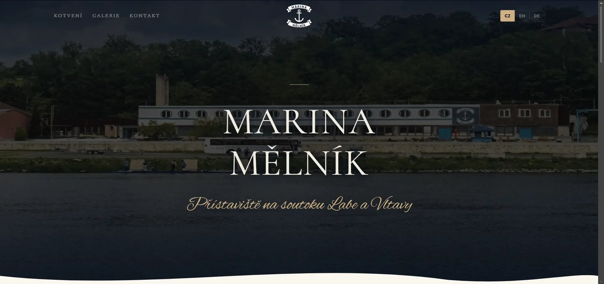
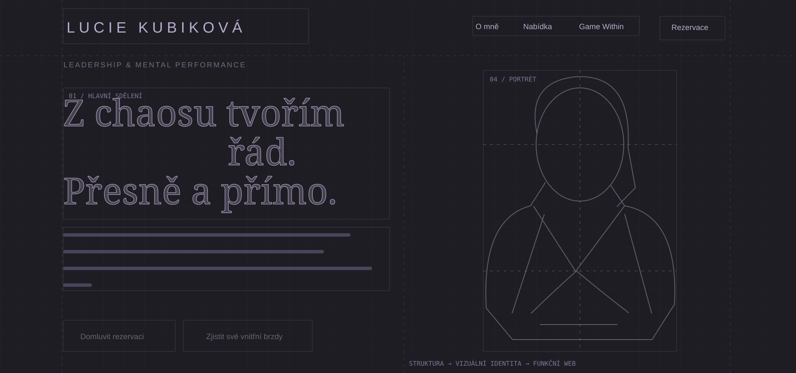
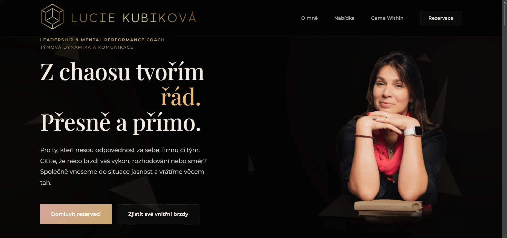
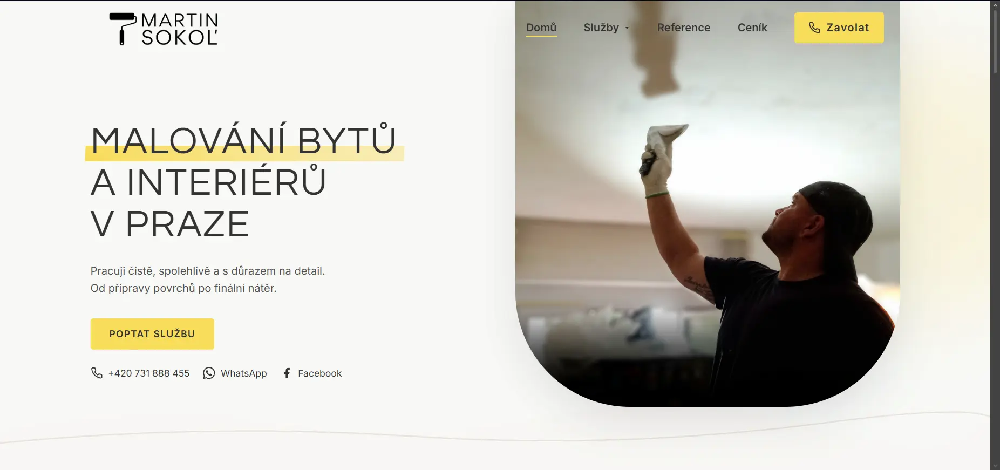

Marina Mělník
Marina Mělník potřebovala představit přístaviště i zahraničním návštěvníkům, proto jsem připravila web v češtině, angličtině a němčině. Vizuál vychází z prostředí přístavu a námořních motivů.
Nejdřív si s vámi ujasním, co má web říkat a komu, a podle toho navrhnu jeho obsah, uspořádání i vzhled.


Lucie Kubiková Návrh a tvorba webů
Pohybem myši odhalte výsledek
Každý web navrhuji pro konkrétní značku a podle toho, co má návštěvníkům říkat a jak na ně má působit. U těchto projektů můžete vidět, jak se to promítá do vzhledu webu i jeho jednotlivých prvků.

Marina Mělník potřebovala představit přístaviště i zahraničním návštěvníkům, proto jsem připravila web v češtině, angličtině a němčině. Vizuál vychází z prostředí přístavu a námořních motivů.
U webu Lucie Kubikové jsem vycházela z jejího sdělení „Z chaosu tvořím řád“, a proto se na pozadí jednotlivé střepy postupně skládají do šipky. Animace tak navazuje na to, jak Lucie pracuje se svými klienty.

Původní web na WordPressu jsem převedla na jednodušší statické řešení a upravila jeho vzhled i obsah tak, aby se návštěvník rychle zorientoval v nabídce malířských služeb a našel kontakt.
Weby, které si můžete prohlédnout naživo
Postarám se o návrh i technické zpracování webu, takže se mnou můžete řešit jeho obsah, vzhled a fungování v průběhu celé spolupráce.
Pokud potřebujete nový web, začneme tím, co na něm mají vaši zákazníci najít a co by měli udělat po jeho návštěvě. Připravím pro něj strukturu, navrhnu jednotlivé stránky a naprogramuji je tak, aby se dobře používaly na mobilu i na počítači.
Firemní weby · Osobní značky · Landing pagesod 6 900 KčU stávajícího webu nejdřív projdu jeho obsah a fungování, abych zjistila, co se dá zachovat a co už neodpovídá vašim potřebám. Potom navrhnu potřebné úpravy struktury, vzhledu nebo technického řešení.
Nový design · Lepší struktura · Technické zpracováníZačínáme auditem zdarmaNa Shoptetu upravuji vzhled e-shopu a jeho obsahové stránky tak, aby odpovídaly vaší značce a zákazník se v nabídce vyznal. Předem se domluvíme na rozsahu úprav a ověříme, jestli je vaše současné řešení umožňuje.
Úpravy vzhledu · Obsahové stránky · Responzivitaod 14 800 KčPokud už web máte a nevíte, co by potřeboval změnit, můžeme začít jeho auditem.
Zjistit více o auditu webu
Jsem webdesignérka a vývojářka z Mělníka a při návrhu webu mě zajímá především to, co děláte, pro koho pracujete a co potřebujete svým zákazníkům sdělit.
Zkušenosti z managementu mi pomáhají přemýšlet o webu i z pohledu člověka, který vede vlastní podnikání. Chci proto znát vaše zadání v souvislostech, abych vám mohla vysvětlit, proč navrhuji konkrétní řešení a jak vám bude sloužit.
Na vašem webu pracuji od návrhu po spuštění, takže se při domlouvání textů, designu i technických úprav obracíte pořád na mě. Spolupráci můžeme zvládnout online a v okolí Mělníka se ráda potkám i osobně.
Moje vzdělání a technické zázemíSídlím ve Velkém Borku hned u Mělníka, takže první schůzku, sběr podkladů i předání webu zvládneme osobně. Se zbytkem republiky pracuji online přes videohovor a sdílenou obrazovku, bez dojíždění a bez příplatků.
Weby pro řemeslníky, služby i malé firmy: podívejte se na realizace z Mělníka a Prahy
Na začátku se domluvíme na rozsahu práce a jednotlivých krocích, abyste věděli, kdy ode mě dostanete návrh a kdy budu potřebovat podklady nebo vaše připomínky.
Probereme, čemu se věnujete, kdo jsou vaši zákazníci a proč nový web potřebujete. Domluvíme se také na zadání, ceně a dalším postupu.
Připravím strukturu stránek a návrh vzhledu, který spolu projdeme a upravíme podle vašich připomínek, než začnu web programovat.
Jakmile si návrh odsouhlasíme, převedu ho do funkčního webu a zkontroluji jeho zobrazení na různých zařízeních, odkazy i formuláře.
Před spuštěním spolu celý web projdeme a po případných úpravách ho připojím k doméně. Při předání vám vysvětlím, jak s ním dál pracovat, a domluvíme se, jestli budete chtít pomoc i s jeho další správou.
Záleží na rozsahu, obsahu a náročnosti designu. Po úvodní domluvě dostanete konkrétní nabídku, abyste předem věděli, co zahrnuje. Orientační rozsahy najdete v ceníku služeb.
Nemusíte mít všechno hotové před prvním rozhovorem. Projdeme, co už máte a co bude potřeba doplnit: texty, fotografie, logo nebo přístup k doméně.
Ano, pracuji online s klienty po celé ČR. V okolí Mělníka se můžeme potkat také osobně. Způsob komunikace domluvíme tak, aby vám vyhovoval.
Ano, můžeme začít auditem a zjistit, zda dává smysl upravit současné řešení, nebo navrhnout nový web. Rozsah doporučím podle vašich cílů a stavu webu.
Napište mi, čemu se věnujete, jestli už web máte a co byste na něm potřebovali změnit nebo nově vytvořit. Pokud zatím nemáte přesnou představu, můžeme si nejdřív ujasnit, co by pro vás dávalo smysl.
zaneta.janacova@gmail.com +420 736 231 196Profil firmy na Googlu